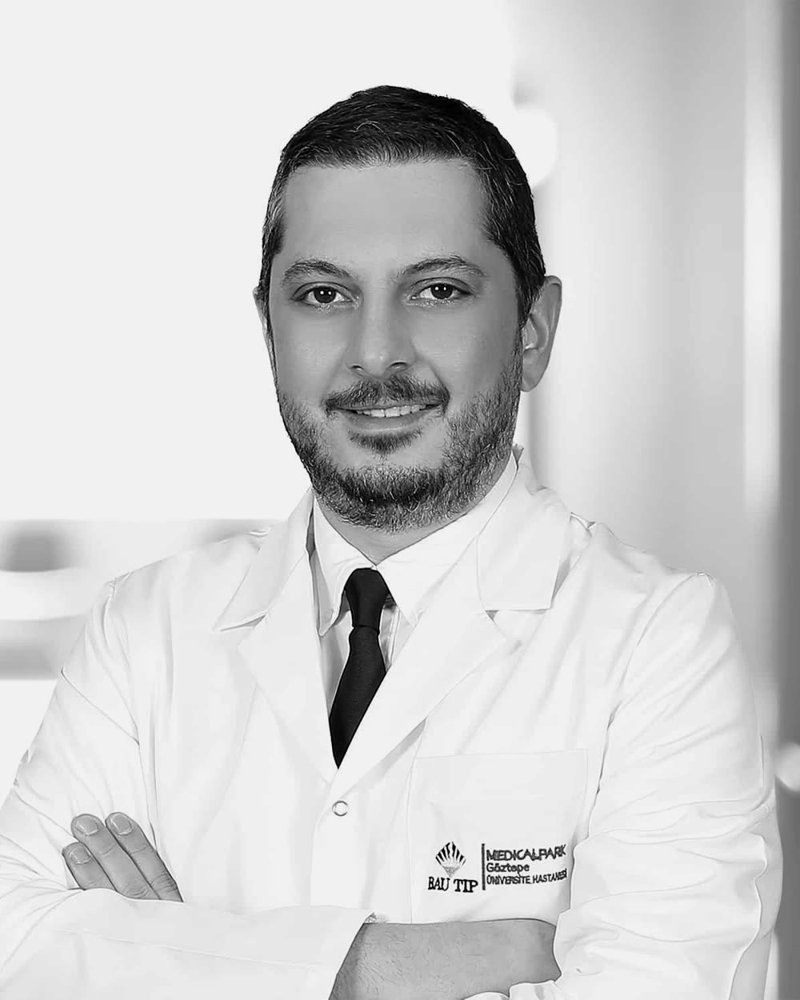
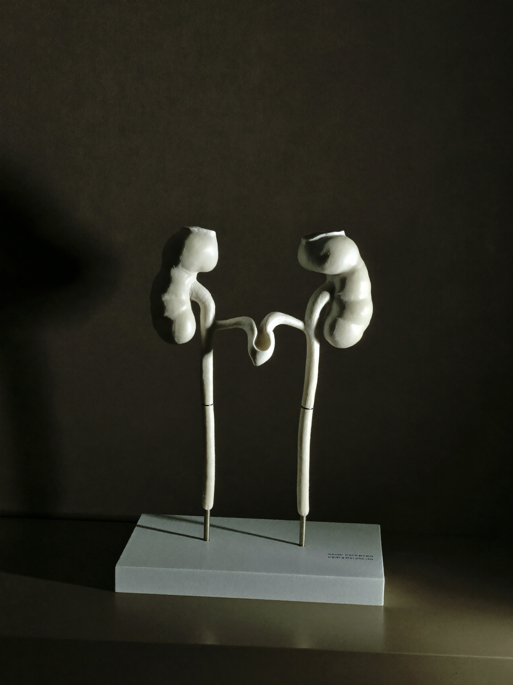

Yaşlı hastalarda retrograd intrarenal cerrahinin güvenliği ve etkinliğiUrology Journal
Prostat, taş veürolojik kanserdekanıta dayalı cerrahi.
Prof. Dr. Kaan GökçenÜroloji uzmanıMedical Park Göztepe

Öne çıkan konu

Prostat hastalıkları · 01
HoLEP
Büyümüş prostatın holmiyum lazerle çıkarılması
Büyümüş prostat dokusunun holmiyum lazerle, karında kesi açmadan çıkarıldığı kapalı ameliyat. Yöntemin kimlere uygun olduğu, ameliyat günü ve sonrası tek monografide.
6 dk okumaGüncelleme: 6 Ekim 2026
Monografiyi okuyunAltı alan,
24 monografi.
Her monografi bir hastalığı ya da tedaviyi baştan sona anlatır: nedir, nasıl anlaşılır, seçenekler neler, ameliyat günü ve sonrası. Hepsi güncel Avrupa Üroloji Derneği kılavuzlarına dayanır.
01→02→03→04→05→06→
Prostat Hastalıkları3 monografi
Prostat büyümesi, işeme şikâyetleri ve HoLEP başta olmak üzere tedavi seçenekleri.
- Prostat büyümesi
- HoLEP ameliyatı
- Gece idrara kalkma
Ürolojik Kanserler9 monografi
Prostat, böbrek, mesane, testis ve böbreküstü bezi tümörlerinde tanı ve cerrahi tedavi.
- PSA yüksekliği
- Füzyon biyopsi
- Prostat kanseri tedavisi
Böbrek ve Üreter Taşları5 monografi
Taşın boyutu ve yerine göre ilaç, şok dalgası ve kapalı lazer yöntemleri; yeniden oluşumu önleme.
- Böbrek taşı tedavisi
- RIRS ameliyatı
- PCNL ameliyatı
Laparoskopik Cerrahi2 monografi
Karında büyük kesi açmadan, küçük deliklerden kamerayla yapılan ürolojik ameliyatlar.
- Laparoskopik ürolojik cerrahi
- Piyeloplasti
İdrar Kaçırma ve Mesane2 monografi
Kadın ve erkekte idrar kaçırma, aşırı aktif mesane ve gece idrara kalkma.
- İdrar kaçırma tedavisi
- Aşırı aktif mesane
Çocuk Ürolojisi3 monografi
İnmemiş testis, hipospadias, reflü ve gece altını ıslatma gibi çocukluk çağı sorunları.
- Çocuk ürolojisi
- İnmemiş testis
- Hipospadias
Her tedavi kararı, muayene ve tetkikler birlikte değerlendirildikten sonra, seçenekler ve riskler açıkça konuşularak verilir.
01
Kanıt
Bilgiler güncel üroloji kılavuzlarına dayanır ve kaynak gösterilir.
02
Açıklık
Yan etkiler, alternatifler ve iyileşme süreci saklanmadan anlatılır.
03
Kapalı cerrahi
Lazer, endoskopi ve laparoskopi; mümkün olduğunda büyük kesi olmadan.
Akademik künye
25makale · YÖK Akademik
59kongre bildirisi · YÖK Akademik
188atıf · Google Scholar, Ekim 2026
8h-indeksi · Google Scholar, Ekim 2026
Hasta rehberi
Muayeneden iyileşmeye
